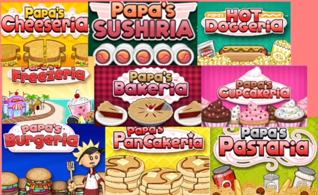
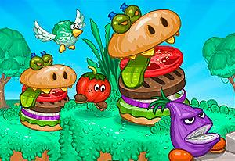
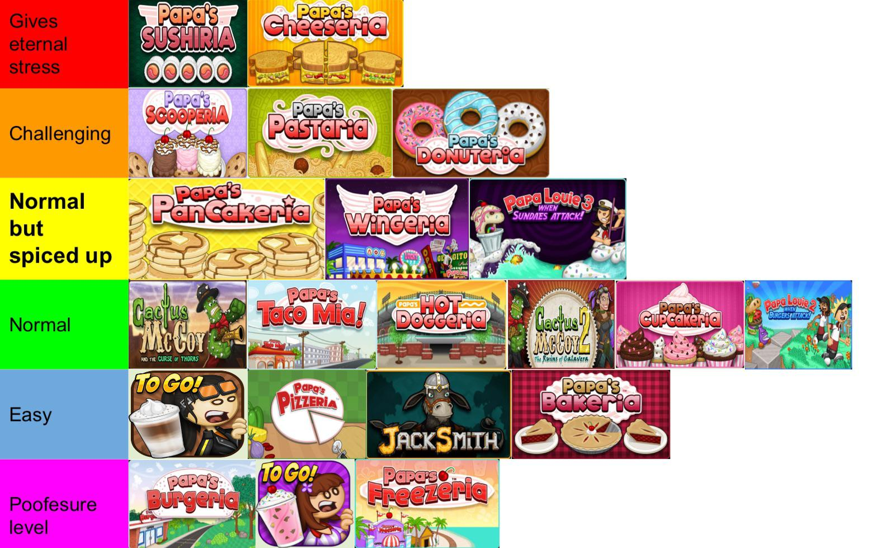

Flipline Studios fue llamado primero Flipline IDS (Abreviatura de Interactive Design Studios) y fue fundada en 2004. No hubo juegos producidos por la compañía todavía, así Neff y Solary diseñaron un cómic llamado Freezing Pointe. Freezing Pointe fue detenido en 2006 y Flipline IDS ha sido renombrado Flipline Studios, el primer juego Papa Louie: When Pizzas Attack! fue lanzado en el mismo año. En 2007, Flipline luego hizo su primer juego de cocina llamado Papa's Pizzeria. Ahora tienen un sitio llamado Flipline Studios.com o Papalouie.com.
 Papa Louie: When Pizzas Attack! Papa's Pizzeria Papa's Burgeria Papa's Taco Mia! Papa's Freezeria Papa's Pancakeria Papa's Wingeria Papa's Hot Doggeria Papa Louie 2: When Burgers Attack! Papa's Cupcakeria Papa's Pastaria Papa's Donuteria Papa Louie 3: When Sundaes Attack! Papa's Cheeseria Papa's Bakeria Papa's Sushiria Papa's Scooperia

